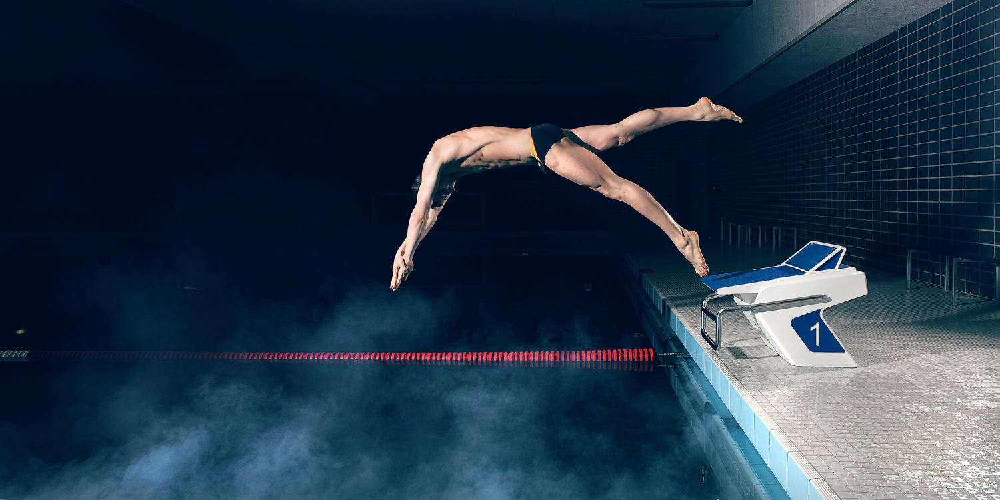

Freestyle
is a category of swimming competition, defined by the rules of the International Swimming Federation (FINA), in which competitors are subject to only limited restrictions on their swimming stroke. (In other words, they have great freedom with respect to their swimming style.) The stroke used almost universally in freestyle races is the front crawl, as this style is generally the fastest. This swimming style is also the most common and has greater distances, such as 1500M or the 1650 yard swim.[1] For this reason, the term freestyle is sometimes used as a synonym for front crawl.[2]
Technique
Although freestyle refers to the ability to choose any stroke, the front crawl is most commonly chosen among swimmers. During a race, the competitor circles the arms forward in alternation and kicks the feet up and down about a foot apart (also known as flutter kick). Although competitors can do whatever they please during the freestyle stroke, it is not common to see someone doing dog paddle, or sidestroke during a race or competition. Stand-alone freestyle events can also be swum using one of the officially regulated strokes (breaststroke, butterfly, and backstroke). For the freestyle part of medley competitions, however, one cannot use breaststroke, butterfly, or backstroke. Most competitive swimmers choose the Australian or front crawl during freestyle competitions, as this style provides the greatest speed. It is based on the Trudgen that was improved by Richmond Cavill from Sydney, Australia. Cavill developed the stroke by observing a young boy from the Solomon Islands, Alick Wickham. Cavill and his brothers spread the Australian crawl to England, New Zealand and America. Richmond Cavill used this stroke in 1902 at an International Championships in England to set a new world record by swimming 100 yards (91 m) in 58.4 seconds. Freestyle competitions have also been swum completely and partially in other styles, especially at lower ranking competitions as some swimmers find their backstroke quicker than their front crawl. During the Olympic Games, front crawl is swum almost exclusively during freestyle. Some of the few rules are that swimmers must touch the end of the pool during each length and cannot push off the bottom or hang on the wall or pull on the lane lines during the course of the race. As with all competitive events, false starts are not allowed (the number of false starts depends upon the particular competitive rules for that competition).
New developments in the sport
Times have consistently dropped over the years due to better training techniques and to new developments in the sport.
In the first four Olympics, competitions were not held in pools, but, rather, in open water (1896– the Mediterranean Sea, 1900– the Seine river, 1904– an artificial lake, 1906– the Mediterranean Sea). The 1904 Olympics freestyle race was the only one ever measured at 100 yards, instead of the usual 100 metres. A 100 metre pool was built for the 1908 Olympics and sat in the center of the main stadium's track and field oval. The 1912 Olympics, held in the Stockholm harbour, marked the beginning of electronic timing.
Male swimmers wore full body suits up until the 1940s, which caused more drag in the water than their modern swimwear counterparts. Also, over the years, some design considerations have reduced swimming resistance making the pool faster — namely proper pool depth, elimination of currents, increased lane width, energy-absorbing racing lane lines and gutters, and the use of other innovative hydraulic, acoustic, and illumination designs.
The 1924 Olympics were the first to use the standard 50 metre pool with marked lanes. In the freestyle, swimmers originally dove from the pool walls, but diving blocks were eventually incorporated at the 1936 Olympics. The tumble turn, better known as the flip turn, was developed in the 1950s. The Trudgen, introduced in England during the 1880s, has been completely supplanted by the front crawl, also known as the Australian crawl. Lane design created in the early 1970s has also cut down on turbulence in water
Rules and regulation
Freestyle means "any style" for individual swims and any style but breaststroke, butterfly, or backstroke for both the individual medley, and medley relay competitions. The wall has to be touched at every turn and upon completion. Some part of the swimmer must be above water at any time, except for the first 15 metres after the start and every turn. This rule was introduced (see History of swimming) to prevent swimmers from using the faster underwater swimming to their advantage, or even swimming entire laps underwater. The exact FINA rules are:
Freestyle means that in an event so designated the swimmer may swim any style, except that in individual medley or medley relay events, freestyle means any style other than backstroke, breaststroke, or butterfly
Some part of the swimmer must touch the wall upon completion of each length and at the finish
Some part of the swimmer must break the surface of the water throughout the race, except it shall be permissible for the swimmer to be completely submerged during the turn and for a distance of not more than 15 metres after the start and each turn. By that point the head must have broken the surface[3]